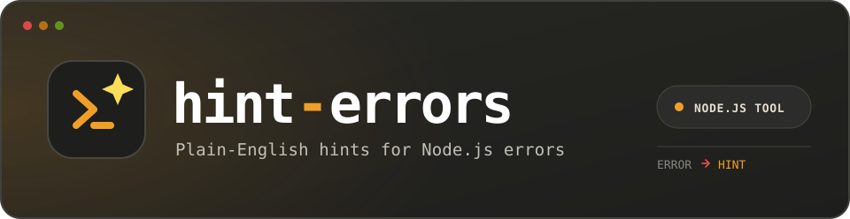

Pick a sample error (or write your own) and see the real
getHint() + rendering engine respond — no install needed.
View on GitHub
·
View on npm
This demo runs the exact hints array and
getHint() matching logic shipped in
src/hints.js. The one thing it can't reproduce faithfully
is parseError()'s file/line lookup — that depends on a real
Node.js stack trace and process.cwd(), so
location below always shows what the package itself
falls back to when no file is available: unknown location.